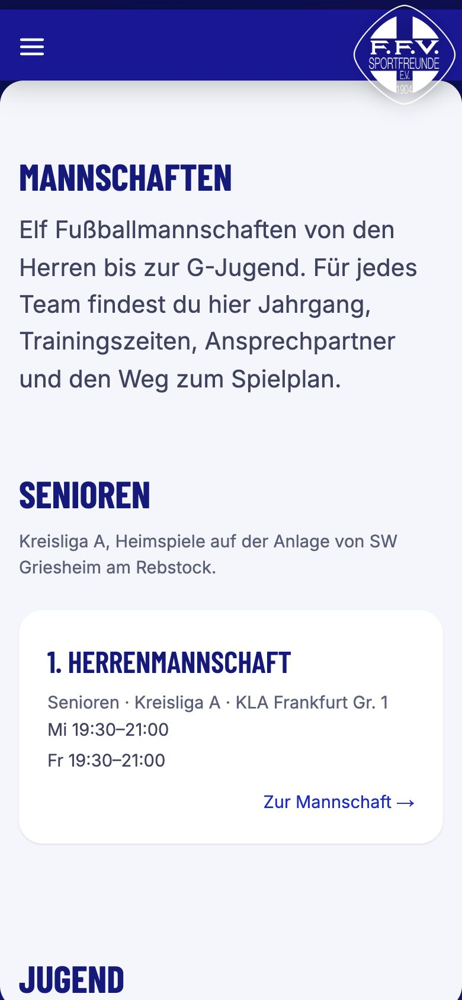

Vorher / Nachher
Links die Website, wie sie heute ist. Rechts der Prototyp in appack-Fassung: dieselbe Vorlage, dieselben Rahmen, aber sechs Menüpunkte, Vollbild-Inhalt und alle Inhalte des Vereins. Zu jedem Paar steht, was besser wird und was gleich bleibt, weil nur der Anbieter es ändern kann.


Besser: Sechs Menüpunkte statt zwölf, kein „Mehr“-Ausklapper, Startbild ohne Kinderfotos, aktiver Menüpunkt mit lesbarem Kontrast.
Bleibt: Landeansicht aus Bild und Text ohne Inhalt, Ladeanimation vor jedem Aufruf.


Besser: Ruhiges Startbild, kürzerer Text, Menü mit sechs Punkten hinter dem Burger.
Bleibt: Inhalt erst nach einem Klick, keine eigene Adresse.


Besser: Sechs Punkte statt zwölf, keine Doppelungen (Fanshop, Teamshop, Sponsoren, Vorstand, Mach mit, Service werden Unterseiten).
Bleibt: Menüpunkte sind keine Links, keine Tastaturbedienung.


Besser: Inhalt in voller Breite statt in einem 40-Prozent-Rahmen; Trainingszeiten, Jahrgänge und Ansprechpartner auf einer Seite.
Bleibt: Feste Rahmenhöhe, die Seite scrollt innen und außen.


Besser: Elf Mannschaften absteigend nach Alter, jede mit Trainingstag, Uhrzeit und Platz; keine privaten Telefonnummern.
Bleibt: Rahmen 93 Prozent der Bildschirmhöhe, darunter der Fußbereich.


Besser: Vorstand mit Funktion und Vereinsmail, Porträts in passender Größe, keine Mobilnummern.
Bleibt: Menüpunkt bleibt auf „Verein“ stehen, weil die Vorlage Unterseiten nicht kennt; kein Zurück-Knopf.


Besser: Zwei Kategorien statt drei, kein Platzhalter „Hier könnte Ihre Werbung stehen“, Logos verkleinert, „Sponsor werden“ mit Vereinsmail.
Bleibt: Erreichbar nur über Verein, nicht über einen eigenen Menüpunkt oder Link.


Besser: Beiträge und Ablauf vor dem Formular, richtige Feldtypen, Datenschutzhinweis, SEPA-Text, Erziehungsberechtigte.
Bleibt: Das Formular des Prototyps versendet nichts; das echte Formular bleibt das appack-Modul.


Besser: Downloads mit Größe und Seitenzahl, kein KI-Bild, kein Tippfehler.
Bleibt: Impressum und Datenschutz öffnen weiterhin im schmalen Rahmen der Vorlage.
Was messbar ist
| Merkmal | Live heute | appack-Fassung | Wer kann es ändern |
|---|---|---|---|
| Menüpunkte | 12, dazu „Mehr“ | 6 | Verein im CMS (MENU) |
| Trainingszeiten | 0 Mannschaften | 11 Mannschaften | Verein (Workspace-Seiten) |
| Inhaltsbreite Desktop | 40 % der Fensterbreite (576 px bei 1440 px) | 100 % | Verein im CMS (menuFullscreen) |
| Rahmenhöhe | fest 87 % der Fensterhöhe, zwei Scrollbereiche | fest 92 %, zwei Scrollbereiche | nur vmapit |
| Eigene Adresse je Seite, Zurück-Knopf, Lesezeichen | nein | nein (Direktlinks ohne Menü) | nur vmapit |
| Landeansicht mit Inhalt | nein | nein | nur vmapit |
| Kontrast aktiver Menüpunkt | 2,3:1 (weiß auf #9e9cf0) | 12,3:1 (#191793 auf weiß) | Verein im CMS (START) |
| Tippziele im Inhalt | 26 × 17 px | mindestens 44 × 44 px | Verein (Workspace-Seiten) |
| Bilder | bis 1500 px für 150 px Anzeige | höchstens 200 KB, passende Größen | Verein (Mediathek/Workspace) |
| lang, Überschrift, Meta an sportfreunde04.de | nein | nein | nur vmapit |
| Lighthouse mobil sportfreunde04.de | 33 / 50 / 78 / 82 (14.09.2026) | unverändert (Vorlage) | nur vmapit |
| Lighthouse mobil Workspace- und Begleitseiten per Direktlink | keine eigenen Seiten | 99 / 100 / 100 / 100 (Minimum über 39 Seiten) | Verein |
| Private Mobilnummern öffentlich | 19 (Stand 11.09.2026) | 0 | Verein im CMS |
| Fußzeile | „© appack 2026“ | „© F.F.V. Sportfreunde 04, 2026“ | Verein im CMS (FOOTER) |
Was nur der Anbieter ändern kann
- Eigene Adresse je Seite und Zurück-Knopf
- Landeansicht mit Inhalt
- Rahmen, der mit dem Inhalt wächst
- Menü als echte Links mit Tastaturbedienung
- lang, Überschriften, Meta-Angaben und Vorschaubild an der Vereinsadresse
- Impressum und Datenschutz als eigene Adressen
- Suchmaschinen-Freigabe für Workspace-Seiten (cdn.appack.de/robots.txt sperrt sie)